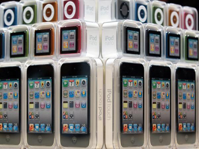
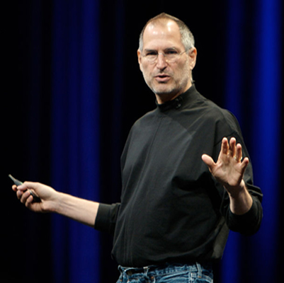

Već početkom 1990-ih, Apple je započeo s razvojem alternativnih platoformi za Macintosh, među kojima je bila i A/UX. Istovremeno, započeo je i sa stvaranjem portala najmenjenog korisnicima Maca, kojeg su nazvali eWorld, a razvili su ga u suradnji s firmom America Online i dizajnirali tako da bude Mac-friendly alternativa online servisima kao što je CompuServe. Uz sve to, sama Mac platforma je postajala zastarjela s obzirom da nije namjenjena multitaskingu, a nekoliko važnih softverskih komponenti bilo je programirano direktno u hardver. Kao dodatak svemu, distributeri sustava OS/2 i UNIX, kao što je firma Sun Microsystems, počeli su predstavljati ozbiljnu konkurenciju Appleu. Došlo je vrijeme da se Macintosh ili zamijeni ili doradi tako da koristi puno moćniji softver.Rezultat saveza s IBMom i Motorolom koji nastaje 1991. godine bilo je stvaranje računalne platforme (PReP) koja bi koristila IBM-ov i Motorolin hardver te Appleov softver. AIM je tako smatrao da će PReP-ov performans i Appleov softver adekvatno potući PC, čime bi kontrirali Microsoftu.
Dana 15. 8. 1998., Apple je predstavio novo sveobuhvatno računalo slično Macintoshu 128K - iMac. Dizajnerski tim iMac-a predvodio je Jonathan Ive, čovjek koji će dizajnirati iPod i iPhone. iMac je sadržavao modernu tehnologiju i jedinstven dizajn te se u prvih pet mjeseci prodao u gotovo 800.000 primjeraka.U ovom periodu, Apple je kupio nekoliko kompanija kako bi stvorio portfolio profesionalnog i prema kupcima orijentiranog digitalnog, produkcijskog softvera. Godine 1998., Apple je objavio kupovinu Macromedijinog softvera Final Cut, čime je naznačio svoju ekspanziju na tržište digitalne video montaže. Sljedeće godine, Apple izdao dva proizvoda za uređivanje videa: iMovie za amatere i, za profesionalce, Final Cut Pro, koji će postati izrazito važan program za montažu videa, čemu u prilog ide brojka od 800,000 registriranih korisnika na početku 2007. Godine 2002., Apple je kupio Nothing Real zbog njihove aplikacije za digitalno uređivanje slika, Shake, kao i Emagic zbog glazbene aplikacije Logic, koja je dovela do razvoja aplikacije GarageBand. Izdanje aplikacije iPhoto kompletiralo je paket nazvan iLife.Mac OS X, temeljen na NeXT-ovom OPENSTEP-u i BSD Unixu izdan je 24. 3. 2001., nakon nekoliko godina razvoja. Ciljane skupine bili su i amateri i profesionalci, a Mac OS X težio je ka kombinaciji stabilnosti, pouzdanosti i sigurnosti Unixa kombiniranu s jednostavnošću korištenja koju je omogućilo korisničko sučelje. Kako bi pomogli korisnicima prelazak s Mac OS-a 9, novi operativni sustav je omogućavao korištenje aplikacija za OS9 preko Mac OS-ove mogućnosti znane kao Classic Environment (eng. Klasično sučelje).
Tokom govora na Svjetskoj razvojnoj konferenciji održanog 6. 6. 2005., Steve Jobs je najavio kako će Apple početi s proizvodnjom Mac računala koja koriste Intelovu tehnologiju tijekom 2006. godine. Dana 10. 1. 2006., MacBook Pro i iMac su postali prva Appleova računala koja koriste Intelov Core Duo CPU. Do 7. 8. 2006., Apple je cijelu Macintosh produkcijsku liniju prebacio na Intelove čipove, što je bilo godinu dana prije nego je najavljeno. Modeli Power Mac, iBook i PowerBook su tokom te tranzicije povučeni s tržišta. Njihovi nasljednici postali su Mac Pro, MacBook i MacBook Pro. Dana 29. 4. 2009., The Wall Street Journal je objavio kako Apple sastavlja svoj vlastiti tim inženjera kako bi dizajnirali mikročipove. Apple je također predstavio softver Boot Camp kako bi pomogao korisnicima instalirati Windows XP ili Vistu na svoja Mac računala zajedno s Mac OS X-om. Appleov uspjeh u ovom periodu bio je vidljiv na primjeru cijena dionica. U razdoblju od 2003. do 2006., cijene Appleovih dionica udeseterostručile su se, te su se s okvirnih 6 dolara popele na čak 80 po dionici. U siječnju 2006., Apple je na tržištu prestigao Dell. Devet godina ranije, Dellov CEO, Michael Dell izjavio je da bi, kad bio on vodio Apple, "zatvorio firmu i vratio novac dioničarima."Ipak, iako su cijene Appleovih dionica rasle, firma je još uvijek bila daleko iza konkurenata koji koriste Windows sa samo 8% (otprilike) osobnih i prijenosnih računala u SAD-u.
Dana 9. 1. 2007. je Jobs, za vrijeme držanja glavnog govora na Macworld Expou, najavio kako će firma Apple Computer, Inc. promijeniti ime u Apple Inc., pošto računala više nisu bili glavni fokus kompanije, koja je prioritete prebacila na mobilne uređaje. Na expu je najavljen i slavni iPhone i Apple TV. Sljedećeg dana, cijene Appleovih dionica popele su se na 97,80 $, što je bio tadašnji rekord, da bi u maju iste godine prešle cijenu od 100 $. U članku objavljenom 6. 2. 2007. na Appleovim stranicama, Jobs je napisao da je Apple spreman prodavati glazbu na iTunesu bez DRM-a (što bi omogućilo da se glazba sluša na drugim playerima) ukoliko bi diskografske kuće pristale odbaciti tehnologiju. Dana 2. 4. 2007., Apple i EMI zajedno objavljuju uklanjanje DRM tehnologije s EMI-jevog kataloga na iTunesu, što je stupilo na snagu u svibnju. Ostale diskografske kuće su to učinile tokom godine. U srpnju sljedeće godine, Apple je pokrenuo App Store kako bi prodavao i distribuirao aplikacije za iPhone i iPhone Touch. U roku od mjesec dana, App Store je prodao gotovo 60 miliona aplikacija i dnevno donosio prihod od prosječno 1,000.000 $, što je Jobsa potaklo da iznese pretpostavku kako će App Store postati izniman financijski uspjeg za Apple. Tri mjeseca kasnije, objavljeno je kako je Apple postao treći opskrbljivač mobilnih telefona u svijetu zbog popularnosti iPhonea.Dana 16. 12. 2008., Apple je najavio da će, nakon više od 20 godina sudjelovanja, 2009. biti posljednja njihova godina na Macworldu i da će Phil Schiller 2009. održati govor, umjesto Jobsa. Nakon gotovo mjesec dana, 14. siječnja 2009., Jobs je najavio kako će uzeti šestomjesečno bolovanje, do kraja lipnja 2009., kako bi se pobrinuo za svoje zdravlje i omogućio firmi da se bolje fokusira na proizvode bez stalnih medijskih spekulacija o njegovom zdravlju. Usprkos Jobsovoj odsutnosti, Apple je zabilježio svoj najbolji nepraznički kvartal tijekom recesije sa profitom od oko 1,21 milijardi $.
Dana 17. 1. 2011., Jobs je objavio kako će uzeti još jedno bolovanje, ovaj put na neodređeno vrijeme, kako bi se u potpunosti posvetio svom zdravlju. Glavni operativni voditelj, Tim Cook, preuzeo je Jobsove dnevne poslove u Appleu, iako će Jobs i dalje "sudjelovati u velikim strateškim odlukama kompanije". Apple Inc. je tijekom 2010. prestigao Microsfot u kapitalizaciji tržišta s 84%-tnim povećanjem na 153,3 milijarde $i ujedno je postao najvrijedniji potrošački brend na svijetu. U junu 2011., Apple je otvorio iCloud, online spremnik za glazbu, slike, podatke i softver. Tada se pretpostavljalo keko je Apple postigao toliku efikasnost u svom lancu oprskrbe da kompanija radi kao monopsonija (jedan kupac, puno prodavača) te da može diktirati uvjere dobavljačima. Zanimljivo je kako su Appleove financijske rezerve, u jednom kratkom periodu tijekom srpnja 2011. (zbog krize), bile veće nego one Vlade SAD-a. Dana 24. 8. 2011., Steve Jobs je dao ostavku na mjesto CEO-a Applea. Zamijenio ga je Tim Cook, dok je Jobs postao predsjednik Applea. Do tog trenutka, Apple nije imao predsjednika već dvoje ko-direktora, Andreu Jung i Arthura D. Levinsona, koji su zadržali svoje titule.Dana 4. 10. 2011., Apple je najavio iPhone 4S, koji sadržava poboljšanu kameru s mogućnošću 1080p snimanja, dual core A5 čip koji je 7 puta brži od A4 čipa, sustav prepoznavanja glasa nazvan Siri i poveznicu s iCloudom. Sljedećeg dana, nakon duge borbe s rakom, preminuo je Steve Jobs. Smrt predsjednika Applea globalno je odjeknula, a uzrokovala je privremeni pad cijena Appleovih dionica. Žaljenje su uzrazili vodeći ljudi u svijetu (među kojima i predsjednik SAD-a, Barack Obama, te Jobsov glavni konkurent, predsjednik Microsfota Bill Gates), a pojavile su se glasine o budućnosti Applea bez Jobsa. Ipak, Jobs je za sobom ostavio velik broj nacrta i ideja, što otvara brojne mogućnosti za kompaniju. Iako je smrt Jobsa dočekana sa žaljenjem, popularnost i prodaja Appleovih proizvoda je porasla, a vrhunac je doživjela na puštanju iPhonea 4S u prodaju. Među kupcima je bio i staru Jobsov suradnik, Steve Wozniak. iPhone 4S je ubrzo dobio nadimak iPhone "4 Steve" ("za Stevea"), kojeg je prvi upotrijebio jedan kupac u SAD-u. Jobsova smrt obilježila je kraj jedne dugotrajne i uspješne ere za Apple Inc.
